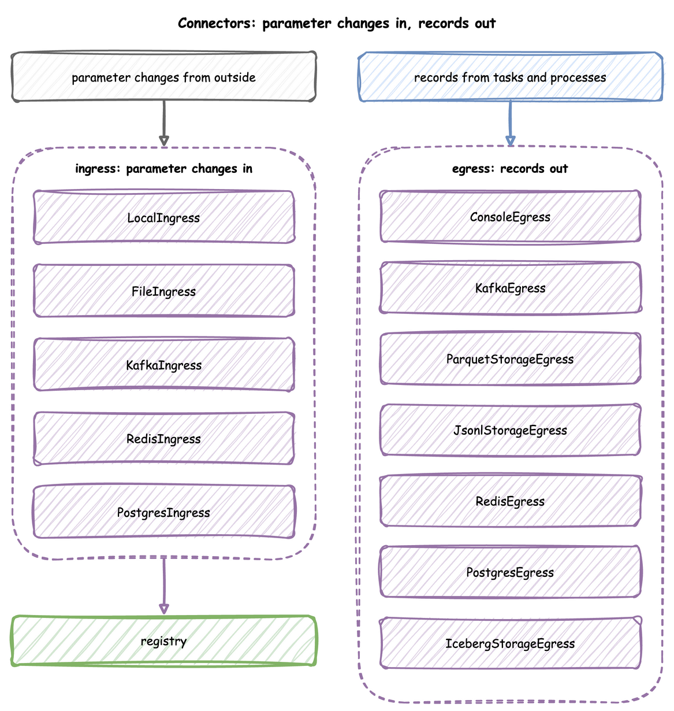
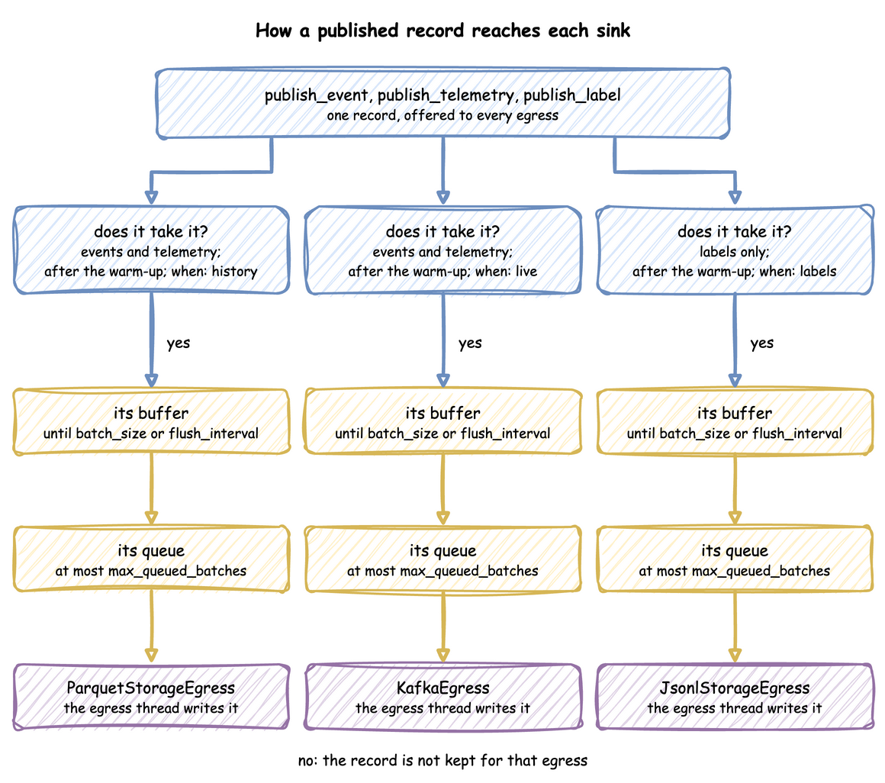

Egress, Batching and Delivery
An egress connector, or sink, writes the records a run publishes: to the console, Kafka, Redis, PostgreSQL, Parquet or JSON Lines files, or Iceberg tables. This page shows each sink, how to choose which records each one gets, and how records travel from a task to a sink.
What It Is
A run publishes three kinds of record in the ordinary case: events, such as a task's queued, started and finished; telemetry, single values such as the statistics; and labels, the ground-truth records of what a scenario changed. Every sink receives every event and every telemetry record, unless its when says otherwise. Labels go only to sinks that ask for them. A run can publish a fourth kind, trace, one record for each event the environment processes, only when stats.trace is set, and only to a sink with when: trace. Records and Telemetry shows each record's shape and what each sink writes.

The tutorial page Streaming Out teaches these features step by step.
How to Use It
Each sink is listed under egress in a blueprint with its type and config, attached with add_egress in the builder, or passed to env.setup_egress in the low-level API. In the builder snippets below, app is a SimulationContext.
In a blueprint, type is one of the short names below, or a !python class from another package. A connector's module is imported only when a blueprint names it, so a blueprint that uses Kafka does not need the PostgreSQL driver. Parquet and JSON Lines are the exception: they import PyArrow when they start writing. A missing package stops the load with its line and the pip install command.
type |
Class | Extra |
|---|---|---|
Console |
ConsoleEgress |
none |
Kafka |
KafkaEgress |
kafka |
Parquet |
ParquetStorageEgress |
parquet |
Jsonl |
JsonlStorageEgress |
parquet |
Iceberg |
IcebergStorageEgress |
iceberg |
Postgres |
PostgresEgress |
postgres |
Redis |
RedisEgress |
redis |
config holds the constructor's arguments. Settings that Python takes as objects are plain values there: a Parquet or JSON Lines filesystem is a mapping with type: local, s3, gcs or azure, and an Iceberg catalog is a mapping of PyIceberg properties. A Postgres tables mapping creates its tables when the run starts. Each table maps to columns, a mapping of column name to SQL type, and an optional primary_key. An ISO time string bound for a timestamp or date column of Iceberg or PostgreSQL is converted before the write. YAML Keys lists the keys of an egress entry.
Console
ConsoleEgress has two formats. The default, log, logs each batch at INFO level with one call, one line per record:
- Each line starts with
[EVT]for an event,[TEL]for telemetry or[LBL]for a label. A trace record, which only awhen: tracesink receives, starts with[EVT]too. desflow runprints these lines as they are. Its other log lines start with the time, level and logger name.- In a script, the logging format the script sets, such as the time and level, starts only the first line of each batch.
One call per batch is much faster than one call per record. In the measurements on Tune Performance, a run that logged each record with its own call took about 50 percent longer in total.
| docs/snippets/yaml_build/connectors.yaml:console-egress | |
|---|---|
| docs/snippets/pages/connectors.py:console-egress | |
|---|---|
The low-level API passes the same ConsoleEgress() to env.setup_egress, in its list of sinks, as Low-level API shows.
With format="json", ConsoleEgress writes each record to stdout as one JSON line instead: the record as published, with its stream_type. Another program can then read the records. It writes at any log level, because the records are output, not a log. Python's logging writes to stderr by default, so the log stays apart from the records, and a pipe such as | jq .key reads only the records. In a blueprint it is type: Console with config: {format: json}. desflow run --sample and --stdout print through it in place of the file's sinks, as YAML Blueprints describes.
The low-level API passes the same ConsoleEgress(format="json") to env.setup_egress, in its list of sinks, as Low-level API shows.
A consumer can check each line against the record schema: EventPayload, TelemetryPayload and LabelPayload are the Pydantic models of the three stream types, as Records and Telemetry describes:
| docs/snippets/pages/record_schemas.py:validate | |
|---|---|
The trace record has no model in SCHEMAS. A consumer reads it as a record whose value is a mapping with the keys priority, event_id and event.
Kafka
KafkaEgress sends events to event_topic and telemetry to telemetry_topic, keyed by the record's key or path_id. Kafka sends all records with one key to one partition, so all events of one entity stay in order. KafkaEgress creates both topics when the run starts, with one partition each, if they do not exist. With a topic_router, it creates neither of them, and only the topics named in topics. Route Records to Topics sends records to other topics, and Connect to Secure Kafka connects to a cluster that uses SASL, mTLS, OAuth or AWS IAM.
The low-level API passes the same KafkaEgress to env.setup_egress, in its list of sinks, as Low-level API shows.
Topics. topic_policy says what the sink does with its topics when the run starts. It is a word, or a mapping of mode, partitions, replication_factor and topic_configs:
create, the default, creates a missing topic and leaves an existing one as it is, with one partition, a replication factor of 1 and no settings of its own.drop_and_createdeletes the topic and creates it again, so each run starts with an empty topic.manualcreates nothing.
The policy covers the event topic and the telemetry topic. topics gives settings to other topics by name, each with the keys of topic_policy on top of the policy. A topic named there is created by the sink, also when a record chooses it with __topic__ or a topic_router. A topics value must be a mapping, and a key that is not a policy key is refused when the blueprint loads.
KafkaEgress takes the same topic_policy and topics as arguments.
The low-level API passes the same KafkaEgress(topic_policy=..., topics=...) to env.setup_egress.
An event whose value has a __topic__ key goes to the topic it names, and the key is removed from the message. A topic_router wins over __topic__, and telemetry always goes to telemetry_topic. The sink also takes a serializer (a mapping with a type of confluent_avro, confluent_json_schema, confluent_protobuf, glue_avro, glue_json_schema or glue_protobuf, with the options of that type, such as schema, schema_file, descriptor_file and message), ssl and sasl_oauth_token_provider ({type: aws_msk_iam, region: ...}), and serializer can also be set for one topic under topics. In a blueprint, a schema_file, a descriptor_file, the verify and cert files of a serializer and the files of ssl are read from the blueprint's folder, as an !include is, so desflow run sub/shop.yaml and cd sub && desflow run shop.yaml read the same files. The Builder reads them from the working directory. Use Schema Serializers and Connect to Secure Kafka use these options. The registry options of the Avro serializers (auth, verify, cert, headers, proxy, timeout and max_retries) are in the step Connect to a Secured Schema Registry.
Parquet and JSON Lines
ParquetStorageEgress and JsonlStorageEgress write each batch as a file of its own, on a local disk, S3-compatible storage, Google Cloud Storage or Azure Blob Storage, through PyArrow. Without a path_router, each event is one flat row in default_path, with its value mapping unpacked into columns, and telemetry is left out.
A Parquet file has a column for every key of any row in its batch, and a mapping value becomes a struct column. A later batch can change the columns:
- A key that first appears in a later batch adds a column to the later files. A reader that combines the columns of all the files reads it as null in the earlier rows.
- An integer column that a later batch gives a float becomes a double in the later files.
- A nested key that first appears later is dropped, because the first batch with a mapping value fixes the keys of its struct column.
The first batch sets the type of each column. A number in the first batch is read as a double for the value of a telemetry record, for the now and peek of a run.steps or run.segments reading, and for usage_since, so a later fraction is kept. A statistic (a number) and an event or a reading (a mapping) cannot share a file, because the value column has one type. Send them to different files with a path_router, because the default route writes no telemetry.
A batch that cannot be written is logged at ERROR, and the sink goes on with the next one.
Routing by __path__. An event whose value has a __path__ key is written to the file path it names, and the key is removed from the row. A path_router wins over __path__, and a record with no __path__ goes to default_path. __path__ is relative to the working directory or to the sink's filesystem, and it is not placed under the folder of default_path. A path built with {gen: format_time, format: "folder/%Y-%m-%d.jsonl"} gives each simulated day its own files, folder/2026-01-01_<id>.jsonl, with one file for each flush. Write to Cloud Storage runs it.
File names. default_path, and any path a path_router returns or __path__ names, is a file name prefix, not a folder. Each batch is written as a file of its own, <stem>_<8 hex digits><extension>, in the path's folder, so output/events.parquet gives files such as output/events_1a2b3c4d.parquet. Give the extension in the path: output/events gives files with none. The folder is created on the first write.
Columns of a finished event. A task's queued and started events carry path_id and status. Its finished event's value is the task's payload only. So in a finished event's row, path_id and status are null unless the payload has them. The Parquet example adds them to its payload for that reason.
The low-level API passes the same sinks to env.setup_egress, in its list of sinks, as Low-level API shows.
Read the files back as one table with pyarrow.dataset, which reads every file in the folder:
| docs/snippets/pages/file_sink.py:read | |
|---|---|
A second run adds its files beside the first run's, so reading the folder then counts both runs. Give each run a folder of its own, or clear the folder before a run.
Filesystems. filesystem is a PyArrow FileSystem object, or a mapping that desflow builds into one when the run starts. The mapping's type picks the class, and its other keys are the arguments of that class:
type |
PyArrow class | Credentials |
|---|---|---|
local (the default) |
LocalFileSystem |
none |
s3 |
S3FileSystem |
access_key and secret_key; without them, the standard AWS settings |
gcs |
GcsFileSystem |
anonymous: true; or access_token with credential_token_expiration; without them, Google's default credentials |
azure |
AzureFileSystem |
account_name, always; with it account_key, or sas_token (pyarrow 20.0.0 or later), or client_id, client_secret and tenant_id (pyarrow 21.0.0 or later); with account_name alone, Azure's default credentials |
An endpoint_override that starts with http:// or https:// also sets scheme, for s3 and gcs, unless scheme is given. azure has no endpoint_override: blob_storage_authority and blob_storage_scheme point it at an emulator such as Azurite. For gcs, credential_token_expiration is an ISO 8601 time, quoted or not, which desflow converts to UTC, and retry_time_limit is a number of seconds, because YAML has no duration type. A key whose value is empty is left out. PyArrow has AzureFileSystem from 16.0.0, the release the parquet extra requires. sas_token and the client credentials need the later releases the table names. PyPI's pyarrow wheels for Windows include it only from 24.0.0.
The same two sinks write to Google Cloud Storage and Azure Blob Storage when filesystem is a mapping. Write to Cloud Storage runs a shop against each store, from start to end:
The low-level API passes the same sinks to env.setup_egress, in its list of sinks, as Low-level API shows.
Redis
RedisEgress appends each record to a Redis Stream with XADD, as one payload field holding the record as JSON. A __stream__ key in the record's value picks the stream, and is removed before writing.
The low-level API passes the same RedisEgress to env.setup_egress, in its list of sinks, as Low-level API shows.
PostgreSQL
PostgresEgress inserts records into a table in batches. It writes only the records whose value is a mapping, and the labels on a labels sink, each label as sim_ts, timestamp, path, old, new and label. A record's row is its value, changed in four ways:
- The record's
sim_ts,timestamp,key(asevent_id) andpath_idare added, and replace fields of the same name. - Its
taskandinstanceare added too, but a value field of the same name keeps its own value. - Keys with no matching column are dropped.
- A
__table__key sends the record only to the sink whosetable_namematches.
The columns are those of the one table that the name resolves to, as PostgreSQL reads it in the CREATE TABLE and INSERT statements. A name with capitals reads the table with the lower-case name, and a name with no schema reads the first table of that name on the search_path. table_policy says what the sink does about the tables in tables when the run starts: create, the default, creates the schema of a qualified name and the table when they do not exist, drop_and_create also drops the table first, and manual creates nothing.
The connection string names odctl, the database that the odctl postgres profile creates, with the user user and the password password.
The low-level API passes the same PostgresEgress to env.setup_egress, in its list of sinks, as Low-level API shows.
By default a record whose key already exists is skipped. upsert_keys updates that row instead, for a model that changes rows it wrote earlier, such as an order moving from packed to shipped. The key columns need a unique index. An update sets only the columns the record carries, and within one flush the last record for a key wins. A record that has no value for a key column, or a null there, is skipped, and one warning at the end of each flush says how many were skipped and why.
| docs/snippets/pages/connectors.py:postgres-upsert | |
|---|---|
The low-level API passes the same PostgresEgress to env.setup_egress, in its list of sinks, as Low-level API shows.
Iceberg
IcebergStorageEgress appends records to an Apache Iceberg table through a catalog. One flush is one commit, so this sink needs a large batch_size of its own: every commit writes new metadata, and many small commits slow down queries.
A table the sink creates takes its columns from the records:
- The first batch gives a column for every key that has a value in some row.
- A key that is null in every row waits for a batch that gives it a value, because Iceberg has no null type. An example is
taskin a low-level event published without one. - A key that first appears in a later batch is added as an optional column, unless the table is named in
schemas, which keeps the columns it gives.
The first batch sets the type of each column. A whole number in the first batch gives an integer column, except that a telemetry value, the now and peek of a run.steps or run.segments reading and usage_since are read as doubles. A batch with a fraction for an integer column is logged at ERROR and its rows are not written. No value is truncated. To keep every row, give the columns in schemas, such as schemas: {shop.events: {key: string, v: double}}: a table named there is created with exactly the columns listed, and every batch is cast to them. A statistic (a number) and an event or a reading (a mapping) need different tables, because the value column has one type. Send them apart with a table_router, because the default route writes no telemetry. Write to Iceberg Tables runs a batch that is lost and the fix.
An event whose value has a __table__ key, a namespace.table name, is written to that table, and the key is removed. A table_router wins over __table__, and a record with no __table__ goes to default_table. An event that Postgres and Iceberg both receive and that has a __table__ without a namespace is refused by Iceberg, with "names no namespace": the error is logged and that batch is lost, where Iceberg used to drop the key and write to default_table. Give Iceberg a table_router, or write namespace.table in the key.
table_policy says what the sink does about a table at its first write, and every run of a context applies it again: create, the default, creates the namespace and the table when they do not exist, drop_and_create drops the table and creates it again once for each run, and manual creates nothing and fails the write if the table is missing. Each run also makes its own connection pool or client, in its own event loop, and makes the sink's folders again.
| docs/snippets/yaml_build/connectors.yaml:table-policy | |
|---|---|
IcebergStorageEgress takes the same table_policy as an argument.
The low-level API passes the same IcebergStorageEgress(table_policy=...) to env.setup_egress.
Catalogs. catalog is a PyIceberg Catalog object, or a mapping of PyIceberg catalog properties that desflow passes to load_catalog on the first write. The mapping's optional name key names the catalog. Each catalog below has a test that writes through it:
| Catalog | type |
Tested against |
|---|---|---|
| REST | rest |
the odctl catalog profile |
| SQL on SQLite | sql |
the unit tests, with a database file |
| SQL on PostgreSQL | sql |
the odctl postgres profile |
| Glue | glue |
Floci, an AWS emulator, not AWS itself |
The properties of each catalog are listed in PyIceberg's configuration. Write to Iceberg Tables runs a shop through each catalog, from start to end.
The low-level API passes the same IcebergStorageEgress to env.setup_egress, in its list of sinks, and gives its batch size in batch_sizes, as Batch Size and Flush Interval shows.
A SQL catalog on SQLite needs no service, so it suits a first run. Its database file and the table files are under one folder:
| docs/snippets/yaml_build/storage_backends.yaml:sqlite | |
|---|---|
The low-level API passes the same IcebergStorageEgress to env.setup_egress, in its list of sinks, as Low-level API shows.
upsert_keys upserts on key columns instead of appending. A seeded model rerun over the same window writes rows with the same keys, so the upsert replaces those rows instead of duplicating them. An upsert reads the matching rows first, replaces whole rows, never deletes, and needs pyiceberg 0.9.0 or later. A record that lacks a key column, or holds null in it, is skipped, and one warning at the end of each flush says how many were skipped and why. Before, IcebergStorageEgress raised ValueError for such a record. An entry that names its tables in schemas, locations or upsert_keys needs no default_table and no router.
The low-level API passes the same IcebergStorageEgress to env.setup_egress, in its list of sinks, and gives its batch size in batch_sizes, as Batch Size and Flush Interval shows.
Choose What Each Sink Gets
Every sink receives every event and telemetry record. when narrows that down:
- A function taking one record and returning True to send it to this sink, in the builder or as
!pythonin a blueprint. eventsandtelemetry, in a blueprint: only the event records, or only the telemetry records.{expr: ...}, in a blueprint: an expression over the record, written withrecord.stream_type(eventortelemetry),record.key,record.taskandrecord.value.<field>. The sink receives the record when the expression is true. A name the record lacks reads as null, so an equality with it is false. An ordering comparison such asrecord.value.amount > 100fails the run on the first record that has noamount, so writerecord.stream_type == 'event' and ...first.tis refused in awhenexpression.historyandlive, in a blueprint: the records stamped beforesimulation.go_live_at, and the rest, as Clocks and Pacing describes.trace: the event trace ofstats.trace, and nothing else. Built-in Statistics sets it up. A run with atracesink and nostats.traceis refused when it loads.labels: the ground-truth labels, and nothing else. No other sink receives a label, so data and labels always reach different sinks. Live Parameters describes them.
| docs/snippets/pages/batching.py:every-sink | |
|---|---|
setup_egress takes the functions in predicates, one for each sink by position, as Batch Size and Flush Interval shows.
The events, telemetry and {expr} forms are YAML forms:
| docs/snippets/yaml_build/connectors.yaml:when-forms | |
|---|---|
add_egress(sink, when=...) takes a function, as above. A function can test record["stream_type"] and record["value"] for the same result.
predicates in setup_egress takes the same functions.
A labels sink gets the ground-truth labels and nothing else:
labels in setup_egress marks each labels sink with True, by position, as Batch Size and Flush Interval shows.
A file sink such as this one writes one file per batch under labels/, such as labels/labels_1a2b3c4d.jsonl. A run's warmup applies to every sink: none receives a record or telemetry stamped before it. Run Length describes it.
Write the Value Alone
A sink normally writes each record with its envelope: stream_type, sim_ts, timestamp, key, task and instance around the event's value. With envelope: false on the entry, the sink writes each event's value alone and receives no telemetry record and no queued or started record of a task. A label record of a when: labels entry is not changed. The Console json format writes the value alone too.
- A Kafka sink sends the value as the message, with the record's key as the message key. A null value is sent as a tombstone, a message with the key and a null value, which a compacted topic reads as a delete of that key. A
topic_routerstill receives the whole record. - A Redis sink sends a value that is not a mapping as JSON, a null included.
- A storage, Iceberg or PostgreSQL sink skips a value that is not a mapping, with one warning.
A task's key_field names the payload field whose value becomes the key of its finished event, and so the Kafka message key. The queued and started records keep the entity's key, and a payload without the field fails the run. Task Flow describes the key.
| docs/snippets/yaml/egress_envelope.yaml:envelope | |
|---|---|
A Kafka sink takes the key in the same way. The value alone is the message, and a null value is sent as a tombstone:
| docs/snippets/yaml_build/connectors.yaml:envelope-false | |
|---|---|
app.add_egress(sink, envelope=False) does the same.
setup_egress takes envelopes, a list with True or False for each sink, by position.
Batch Size and Flush Interval
A sink receives records in batches. A batch is handed over when it holds batch_size records, or when flush_interval simulation seconds have passed, whichever comes first. At factor: 0, the timer does not start until a go_live_at switches the run to real time, because simulation time is not tied to the wall clock before then.
| Setting | Default | Set with |
|---|---|---|
batch_size |
500 | with_batching, or per sink on add_egress |
flush_interval |
1.0 simulation seconds | with_batching, or per sink on add_egress |
max_queued_batches |
2000 | with_batching |
drain_stall_seconds |
30.0 seconds | with_batching |
A size is a whole number of 1 or more and an interval is above 0. The Builder refuses true, 0, a negative number and NaN, as YAML does, and YAML refuses true. with_batching sets the defaults, and each sink can have its own size and interval. A stream sink needs small, frequent batches to keep latency down. A file or lake sink needs large ones, because each batch becomes one file, and for Iceberg one commit.
| docs/snippets/pages/batching.py:defaults | |
|---|---|
The lists are matched to the sinks by position, and None means the default:
setup_egress also takes lag_monitor_interval, the simulation seconds between system.simulation.lag_seconds records. Its default, "auto", is off at factor 0 and 1.0 simulation seconds otherwise. A run that goes live starts it at the go-live instant. None or 0 turns it off. The builder and YAML set it with lag_interval, as Clocks and Pacing describes.
How It Works
A published record goes through the same steps for each sink:

publish_event,publish_telemetryorpublish_labelbuilds the record as a plain dictionary.- Each sink tests it once. A labels sink takes only labels, and only a labels sink takes a label. No sink takes a record stamped before the warm-up. Then the sink applies its
when. - The record goes into that sink's buffer. When the buffer reaches
batch_size, or the sink's timer fires, the buffer is handed to the sink's queue as one batch. - The egress thread takes batches from each queue and writes them with the sink's connector.
A connector is a class with one method, async run(queue), so a sink desflow does not have takes one class to write: Write a Connector shows how.
Each sink has its own buffer and its own queue. All sinks run as tasks on one thread, so a sink that waits with await does not hold up the others. A sink that blocks the thread holds up every sink, as a Kafka sink does while its serializer waits for a schema registry. Memory holds each sink's buffer and the batches waiting in its queue. A record that several sinks take is stored once. A queue holds at most max_queued_batches batches. When it is full, the simulation waits for room, so a sink that cannot keep up slows the run instead of building a backlog. When a queue stays full for drain_stall_seconds, the sink has stopped consuming, and the run raises RuntimeError rather than losing records.
Teardown flushes every buffer, then waits for the queues to drain. It keeps waiting while they shrink, and gives up only when they have not shrunk for drain_stall_seconds. Records still queued then are lost, and a warning names the sinks that held them.
Stability and Limits
- A slow sink slows the run. The run slows on purpose: otherwise a backlog would build that teardown would have to throw away.
- Size or interval, whichever comes first. The effective batch is the smaller of
batch_sizeand what arrives in oneflush_interval, so a large size with a short interval never fills. A warning says so once, after one sink has flushed on its timer 20 times in a row with less than a quarter of itsbatch_size. - A labels sink receives only labels, and a data sink never receives one. A label sent to a Kafka sink goes to its
event_topicwith no key. - Records matching no sink are not written anywhere, which is how
whendrops them. - At
factor: 0, records leave a buffer only when it is full and at teardown.